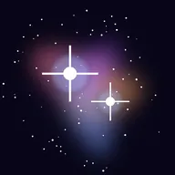
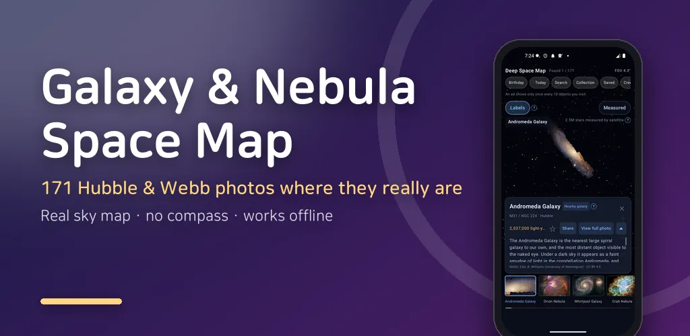
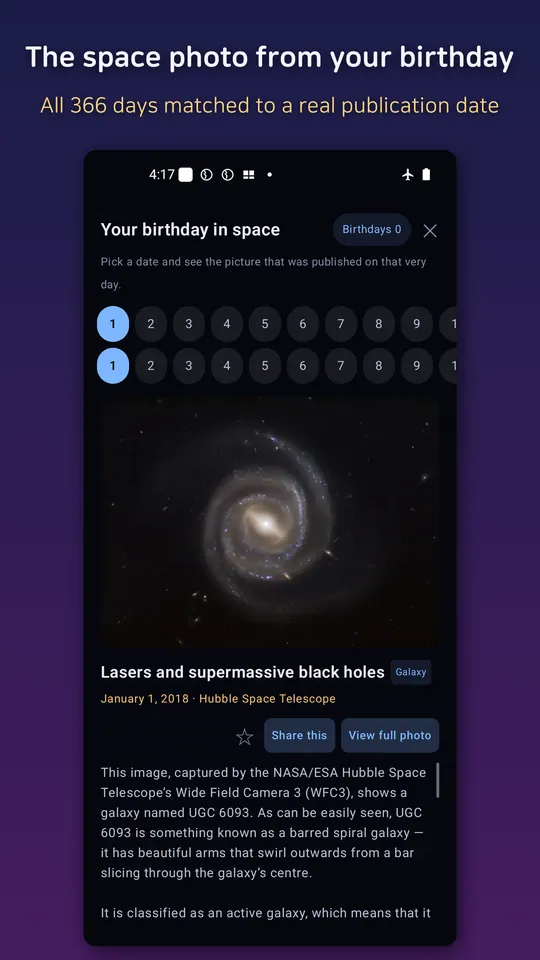
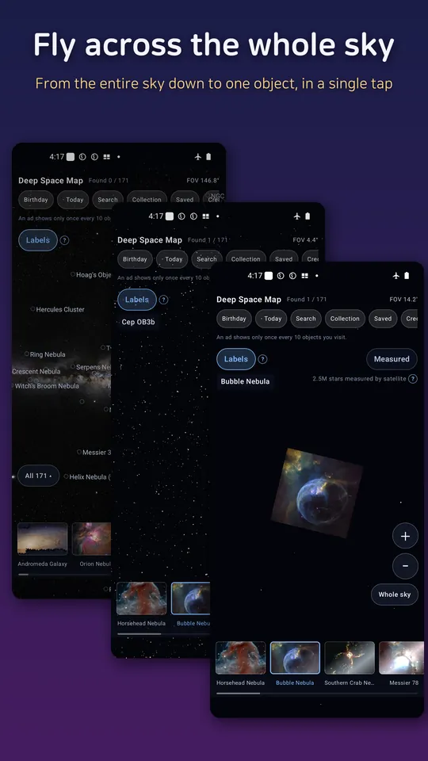
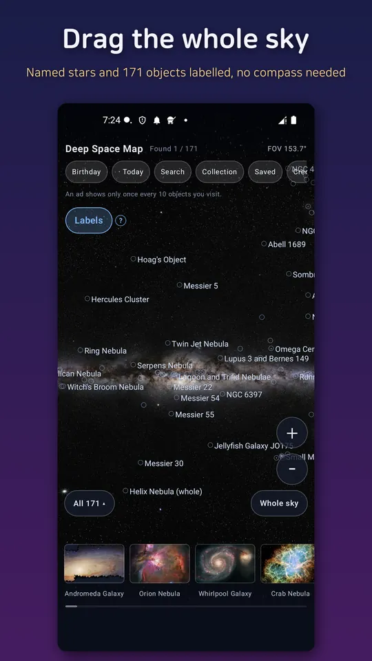
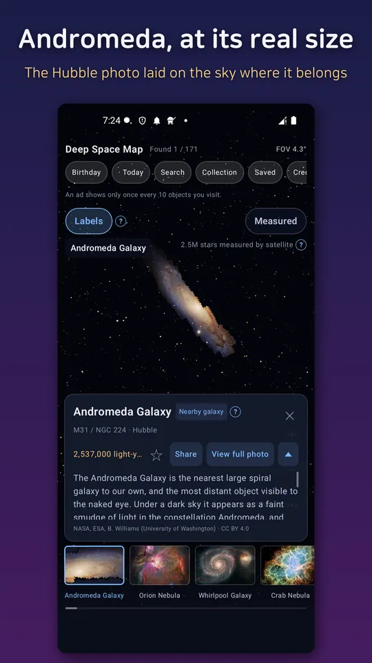
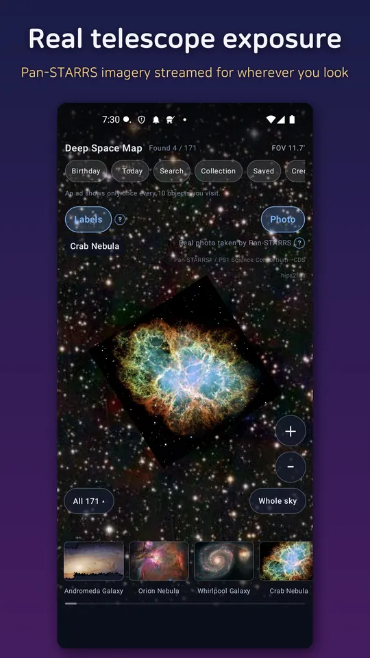
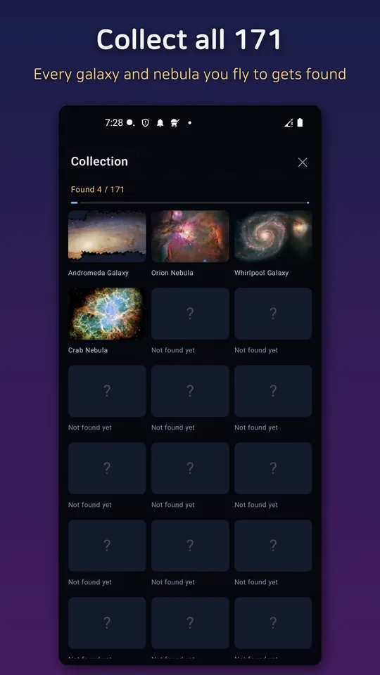

Sky Map: Space on My Birthday
Find the space photo from your birthday, plus 171 galaxies and nebulae offline.







About this app
A space map you don't need a clear night sky to use.
Day or night, indoors or under cloud cover, it doesn't matter. Pan and zoom across the whole sky with your fingertip, and when you reach the spot of a famous space photo, the real image appears right there.
🗺️ A whole-sky map you browse like a map app
Drag, pinch, and zoom across the sky the same way you'd browse a map. The background is a real panorama of the Milky Way, with real stars and named objects overlaid on top.
📸 171 famous space photos, at their real spot in the sky
Tap a thumbnail from the bar at the bottom and the map flies to that exact spot. Keep zooming in, and the photo appears at its true angular size — the size it actually occupies in the sky. Galaxies, nebulae, and star clusters, right where they really are.
🔭 No telescope, no internet required
The map, all 171 photos, search and the collection run fully offline. It never asks for location, camera or compass permission — this isn't an app you point at the sky, so it works the same on a cloudy night or in a bright city.
🛰️ Or switch on the real sky (optional)
Tap the "measured ↔ photographed" toggle and the patch of sky you're looking at is replaced by an image a telescope actually took of it. Offline you see 2.5 million stars measured by the Hipparcos satellite; switched on, you see the real Pan-STARRS exposure of the same spot. It uses mobile data, so it stays off by default and asks before it starts.
🔭 Shot by the Hubble Space Telescope and the James Webb Space Telescope
Every one of the 171 photos on the map is a real observation. Hubble (esahubble.org) and the James Webb Space Telescope (esawebb.org) supply the deep, narrow views, joined by the wide fields of the big ground telescopes of ESO (eso.org) and NOIRLab (noirlab.edu) in Chile and Arizona. Each photo shows which telescope took it, and the detail text explains how the same object looks different through different kinds of telescope.
🏆 Exploration collection
Track how many of the 171 objects you've found, all gathered automatically into a collection you fill up over time.
🎂 Your birthday in space
Pick any date and see a real space photo that was published on that very day. All 366 days are matched to a genuine publication date, so your birthday, a friend's birthday and every anniversary each bring up a different picture — and you can share it as a card.
📅 Object of the day
A new object is pinned on the map every day — a small reason to open it once a day. You can have it arrive as an evening notification if you want; decline it and every feature still works exactly the same.
🔎 Search and labels
Look things up by Messier number (like M31) or by name — Andromeda, the Horsehead Nebula — and named stars are labeled right on the map.
Recommended for
- Anyone who loves space photos but found stargazing apps' compass drift annoying
- Anyone who wants to see the real space photo published on their birthday
- Parents who want to show kids real galaxy and nebula photos on a map
- Anyone curious about space who doesn't have time to go outside at night
The photos in this app are sourced from esahubble.org and esawebb.org under a CC BY 4.0 license, and each photo is shown with its original credit line. This app is not affiliated with, endorsed by, or sponsored by NASA, ESA, ESO, or any space agency.
Android · free with ads · Developer: RealTunaLove · Store listing in 17 languages
Background story: why I built it